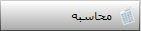

در این قسمت از سیستم بهای تمام شده، می توانید بهای تمام شده کالاهای دارای گردش را بر اساس گروه های کالا یا خود کالاها مشاهده نمایید.
پس از محاسبه و ثبت سند مالی در منوی قبل می توانید محاسبات انجام شده برای هر حوزه گردش را در این قسمت مرور کنید و گزارشات مورد نیاز را بگیرید. صفحه ابتدایی این منو به شکل زیر میباشد.

در شکل بالا محاسبات برای همه حوزه های گردش نمایش داده شده است در صورتی که بخواهید محاسبات را در حوزه گردش خاصی مشاهده کنید می توانید از طریق انتخاب حوزه گردش از این قسمت
 استفاده کنید.
استفاده کنید.

با استفاده از منوهای بالا می توانید محاسبات انجام شده را بر اساس (انبار، شخص، شعبه و ...) فیلتر کنید و گزارشات دلخواه را بگیرید.

می توانید مرور کالاها را از گروه های کالا آغاز کنید. در این صورت باید در شکل بالا گزینه گروه در حالت انتخاب باشد.
همچنین با انتخاب گزینه کالا، می توانید مستقیما از کالاها شروع کنید و کاردکس کالای مورد نظر خود را مشاهده نمایید.
 با انتخاب کالای مورد نظر و سپس زدن گزینه کاردکس انبار، می توانید کاردکس تعدادی انبار را برای کالای انتخاب شده مشاهده نمایید.
با انتخاب کالای مورد نظر و سپس زدن گزینه کاردکس انبار، می توانید کاردکس تعدادی انبار را برای کالای انتخاب شده مشاهده نمایید.

 با استفاده از این گزینه میتوانید کاردکس ریالی کالا را مشاهده کنید.
با استفاده از این گزینه میتوانید کاردکس ریالی کالا را مشاهده کنید.

 با استفاده از این گزینه میتوانید سند مربوط به رکورد مورد نظر را باز کرده و مشاهده کنید.
با استفاده از این گزینه میتوانید سند مربوط به رکورد مورد نظر را باز کرده و مشاهده کنید.
 در صورتی که بخواهید در کاردکس انبار و یا کاردکس ریالی انبار ردیف یا ردیف هایی نمایش داده نشود می توانید از این گزینه استفاده کنید. توجه داشته باشید که این گزینه فقط رکورد را از حالت نمایش خارج میکند و تغییری در مانده تعدادی کالا ایجاد نمی کند.
در صورتی که بخواهید در کاردکس انبار و یا کاردکس ریالی انبار ردیف یا ردیف هایی نمایش داده نشود می توانید از این گزینه استفاده کنید. توجه داشته باشید که این گزینه فقط رکورد را از حالت نمایش خارج میکند و تغییری در مانده تعدادی کالا ایجاد نمی کند.
 در صورتی که از طریق گزینه قبلی رکوردهایی را از حالت نمایش خارج کرده باشید با استفاده از این گزینه میتوانید آن را دوباره به حالت نمایش در آورید.
در صورتی که از طریق گزینه قبلی رکوردهایی را از حالت نمایش خارج کرده باشید با استفاده از این گزینه میتوانید آن را دوباره به حالت نمایش در آورید.
 با استفاده از این گزینه میتوانید برای کالای مورد نظر مجددا محاسبات را انجام دهید.
 با استفاده از این گزینه میتوانید محاسبات انجام شده را حذف کنید.
با استفاده از این گزینه میتوانید محاسبات انجام شده را حذف کنید.
 با تیک زدن این گزینه تمامی کالاهایی که در سیستم حسابداری انبار محاسباتی برای آن ها صورت نگرفته هم با مفادیر صفر نمایش داده می شود.
با تیک زدن این گزینه تمامی کالاهایی که در سیستم حسابداری انبار محاسباتی برای آن ها صورت نگرفته هم با مفادیر صفر نمایش داده می شود.